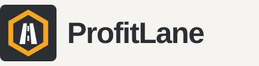

Version 1
Amber outline
An amber hexagon outline frames a white road and white center stripe on a charcoal gray square. The default keeps the established outlined shape clear at small sizes.
ProfitLane / Identity refinement
Better information for a fairer rate conversation. ProfitLane supports independent dispatchers while keeping their expertise and judgment at the center.
One established shape. Two ways to wear it.
Version 1 / Default identity
Made for dispatchers by dispatchers.01 / The logo comparison
The original Concept B hexagon, road edges, lane stripe and proportions are preserved. Only the color treatment changes.
Version 1
An amber hexagon outline frames a white road and white center stripe on a charcoal gray square. The default keeps the established outlined shape clear at small sizes.
Version 2

The same amber outline, white road and white center stripe are retained in the alternative files. Both versions now share the approved color treatment.
Both icons use the same charcoal gray rounded square, amber outline, white center dashes, and white road. Full logos use the original wordmark styling and icon-to-wordmark proportions on off-white. Version 1 is the default in the shared CSS and primary logo files.
02 / Color & typography
Charcoal gray carries the information. Amber adds emphasis, white defines the road, and off-white gives the page room to read.
Charcoal#2B2F33
Amber#F5A623
Off-white#F7F5F0
Use charcoal text on off-white or amber, and off-white or amber on charcoal. Amber is a fill or a highlight on charcoal; it is not suitable for small text on off-white.
These existing status colors are reserved for interface feedback. They are not used in the three-color logo artwork.
03 / In everyday use
The original Concept B typography remains: Barlow Condensed for headings, Barlow for body copy.
Barlow Condensed / Heading / 700
Know the miles.
Make your call.
Barlow / Body / 400–700
A load is more than a rate per mile. Check the deadhead, diesel costs and time, then bring your judgment to the offer.
Button specimens only. Free Google Fonts load when available; readable system fonts take over offline.
A starting point.
Your judgment comes next.
04 / Single ink
The original badge outline, road and stripe in one charcoal ink, for invoices, printing and merchandise.
05 / Keep it human
Be straightforward, helpful and honest about what the tool can tell us. Respect the dispatcher’s experience.
ProfitLane
Made for dispatchers by dispatchers.
Invite people to try the tool and judge whether it helps. Keep the dispatcher in control; never promise higher pay or imply that AI replaces them.
Read the complete working brand kit